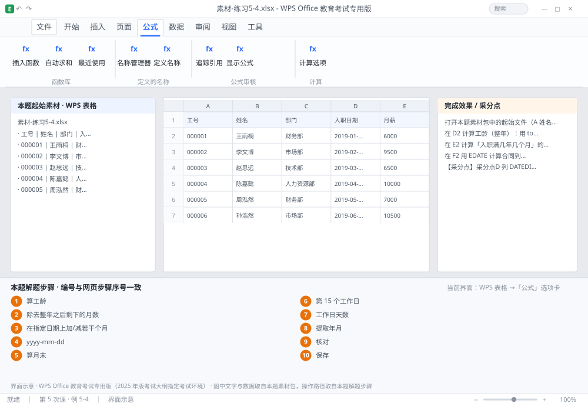

完成比对文档 · 例 5-4
日期函数：工龄、合同到期（EDATE）、月末（EOMONTH）、工作日 ｜ 第 5 次课 / WPS 表格 ｜ 网页：实操-表格2.html ｜ 考试环境：WPS Office 教育考试专用版（2025 年版考试大纲指定考试环境）
用途 本页按修订后的题目要求与解题步骤生成，是交卷自查的结果基准：
逐项列出每一步应出现的可复核结果，配合模拟操作截图与解题结果文件使用。
它不是素材包的一部分，不会预置答案动作；起始素材仍从本题素材包下载。
一、本题起始素材包
目录：练习素材/练习5-4-日期与工作日函数/ ｜
下载包：练习素材/下载/练习5-4-日期与工作日函数.zip
二、题目要求
- 打开本题素材包中的起始文件（A 姓名、B 入职日期、C 合同年限（年））。
- 在 D2 计算工龄（整年）：用 today 与 DATEDIF，下拉。
- 在 E2 计算「入职满几年几个月」的月数部分（"ym"），下拉。
- 在 F2 用 EDATE 计算合同到期日 = 入职日期 + 合同年限×12 个月。
- 在 G2 用 EOMONTH 计算入职当月的最后一天。
- 在 H2 用 WORKDAY 计算入职后第 15 个工作日（跳过周末）。
- 在 I2 用 NETWORKDAYS 计算入职到今天的有效工作日数。
- 在 J2 用 YEAR / K2 用 MONTH 提取入职年份与月份。
- 保存为 学号-姓名-练习5-4.xlsx。
三、解题步骤（编号与下方核对表、截图编号一致）
- 算工龄。D2 输入 =DATEDIF(B2,TODAY(),"y") → 下拉。TODAY() 不带参数，返回当天日期，每次打开文件自动更新。
- 算零头月数。E2 输入 =DATEDIF(B2,TODAY(),"ym") → 下拉。结果为「除去整年之后剩下的月数」。
- 算到期日。F2 输入 =EDATE(B2,C2*12) → 下拉。EDATE 的作用是「在指定日期上加/减若干个月」，自动处理大小月与闰年。
- 设日期格式。选中 F2:F21 → Ctrl+1 → 日期 → 选「yyyy-mm-dd」或自定义 yyyy"年"m"月"d"日"。
- 算月末。G2 输入 =EOMONTH(B2,0) → 返回入职当月的最后一天。第二参数 0 表示当月，1 表示下月月末，-1 表示上月月末。
- 第 15 个工作日。H2 输入 =WORKDAY(B2,15) → 从入职日起往后数 15 个工作日（自动跳过周六周日）。若需排除法定节假日，用第四参数（节假日区域）。
- 工作日天数。I2 输入 =NETWORKDAYS(B2,TODAY()) → 返回两日期之间的工作日数（含首尾）。
- 提取年月。J2 输入 =YEAR(B2)；K2 输入 =MONTH(B2) → 下拉。
- 核对。抽查一人：入职 2019-03-15、合同 3 年，到期日应为 2022-03-15。
- 保存。Ctrl+S。
四、完成效果 / 采分点
采分点D 列 DATEDIF 用 "y" · E 列用 "ym" 且结果 < 12 · F 列 EDATE 参数为 C2*12 且到期日正确 · G 列 EOMONTH 第二参数为 0 · H 列 WORKDAY、I 列 NETWORKDAYS 用法正确 · J/K 列年月提取正确
五、逐项完成核对表
| 步骤 | 关键操作路径 | 应出现的结果（可复核） |
|---|
| 1 | 算工龄 | D2、=DATEDIF(、B2 |
| 2 | 算零头月数 | E2、=DATEDIF(、B2、「除去整年之后剩下的月数」 |
| 3 | 算到期日 | F2、=EDATE(、B2,C2、「在指定日期上加/减若干个月」 |
| 4 | 设日期格式 | F2:F21、「yyyy-mm-dd」 |
| 5 | 算月末 | G2、=EOMONTH(、B2 |
| 6 | 第 15 个工作日 | H2、=WORKDAY(、B2 |
| 7 | 工作日天数 | I2、=NETWORKDAYS(、B2 |
| 8 | 提取年月 | J2、=YEAR(、B2、K2、=MONTH( |
| 9 | 核对 | 核对 |
| 10 | 保存 | 保存 |
六、模拟操作截图

界面示意 · WPS Office 教育考试专用版 · 橙色编号与本题解题步骤序号一致；
图中文字与数据取自本题素材包，功能入口取自本题解题步骤。
核对方法：按网页解题步骤完成并另存自己的成稿后，逐行比对本表第 3 列的
参数、公式、区域、文件名与对象数量；再对照网页「完成效果 / 采分点」检查版式是否一致。